These notes use content from OpenIntro Statistics Slides by
Mine Cetinkaya-Rundel.
These notes use content from OpenIntro Statistics Slides by
Mine Cetinkaya-Rundel.
In this section, we discuss Normal Distribution, a continuous random variable distribution.
- A random variable is called continuous when its possible values form an interval.
- The probability distribution of a continuous random variable \(X\) is denoted by a probability density function (pdf) \(𝑓(𝑥)\), with \(𝑓(𝑥)≥0\).
- The pdf of \(X\) is usually represented by a probability density curve over the interval of all possible values of the random variable as shown below.
- The probability that \(X\) falls between two values 𝑎 and 𝑏, is the area under the curve between 𝑎 and 𝑏, expressed as \(𝑃(𝑎<𝑋<𝑏)\).
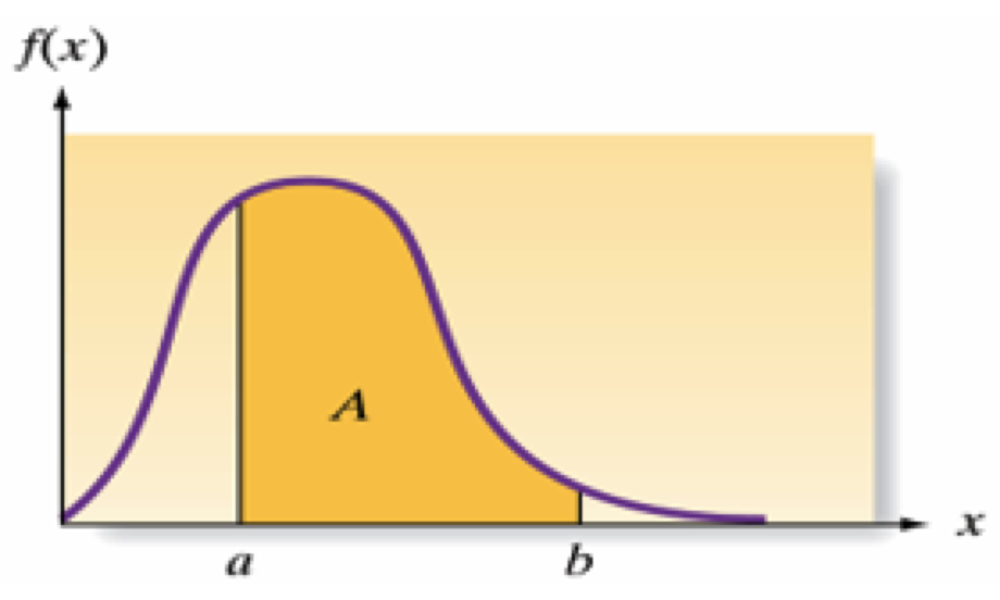
- Similar definition applies to \(𝑃(𝑋<𝑏)\) and \(𝑃(𝑎<𝑋)\).
- The total probability (the total area under the density curve) equals to 1.
Example. The graph on the right represents the probability distribution of commuting time from a survey. The area under the curve for values higher than 45 is 0.15. That is, \(𝑃(𝑋≥45)=0.15\).
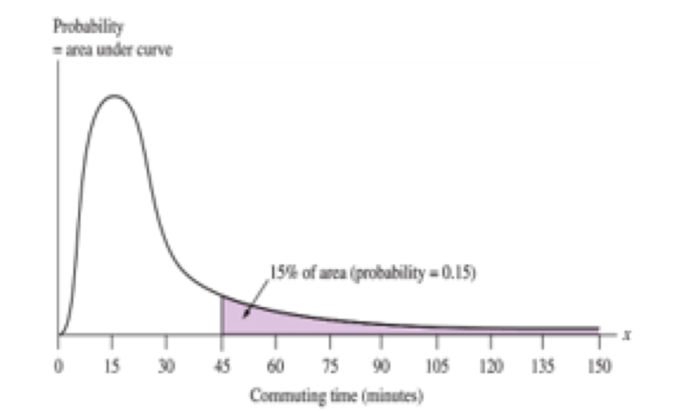
Practice:
Note: \(𝑃(𝑋<45)=𝑃(𝑋≤45)\) – the equal sign does not make difference here in the case of continuous random variable because \(𝑃(𝑋=45)=0\).
Example. Below are a some histograms with different bin widths (10, 5, 2.5, 1.25) for the heights of U.S. adults. 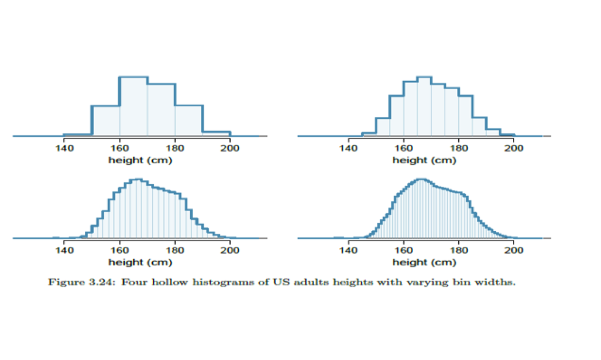
In the last two plots, the bins are so slim that they start to resemble a smooth curve, which represents a density function.
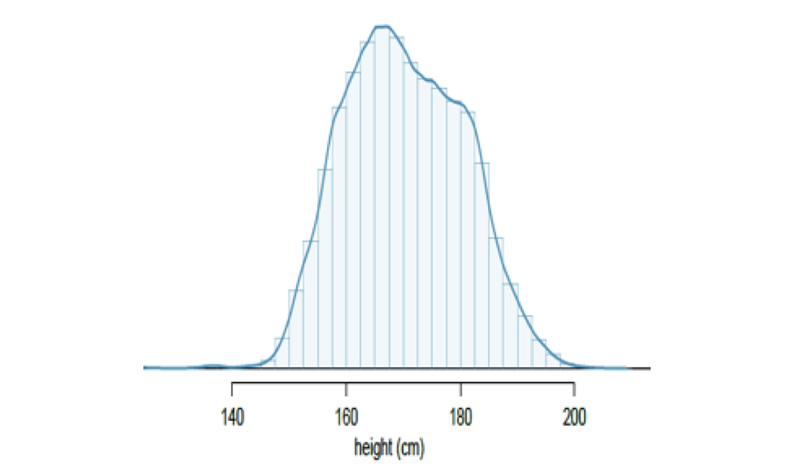
Example. From the histogram, if the sample size is 3,000, 000, and the counts in bins [180, 182.5) and [182.5, 185) are 195,307 and 156,239, Find the proportion of US adults whose heights in [180, 185).
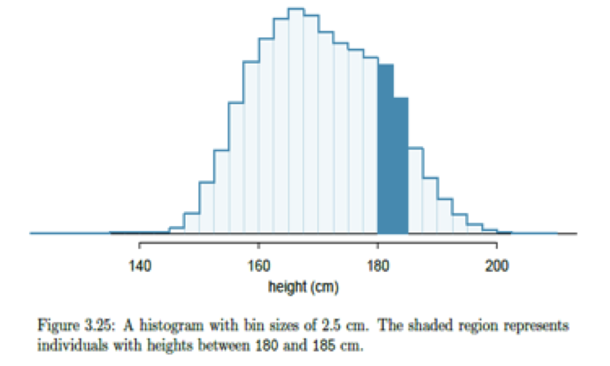
- For continuous distribution, P(height in [180, 185)) = area under the curve between 180 and 185 =0.1157
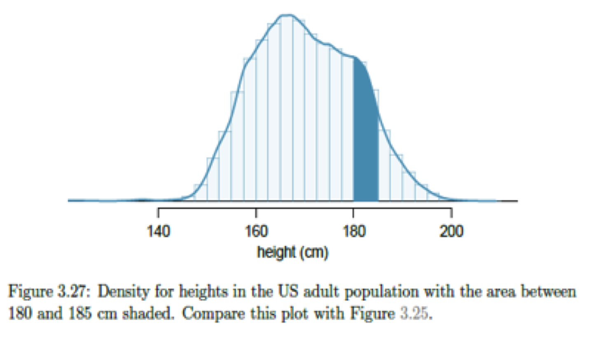
\[𝑓(𝑥)=\frac{1}{\sigma \sqrt{2\pi}}e^{-\frac{1}{2}\left(\frac{𝑥−\mu}{\sigma}\right)^2}\ \ ; \ \ (−∞<𝑥<∞)\]
The graph of this function is bell-shaped, symmetric about the center \(\mu\).
Normal distribution is denoted as \(\color{red}{𝑁(\mu, \sigma)}\). It is determined by the mean \(\mu\) (the center) and standard deviation \(\sigma\).
\(𝑁(0, 1)\) is the standard normal distribution with \(\mu=0\) and \(\sigma=1\)
Many variables are nearly normal, but none are exactly normal.
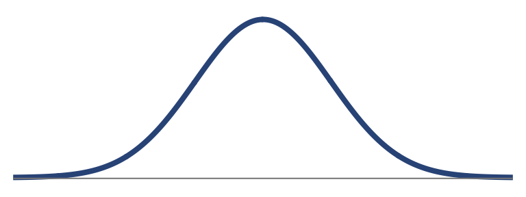
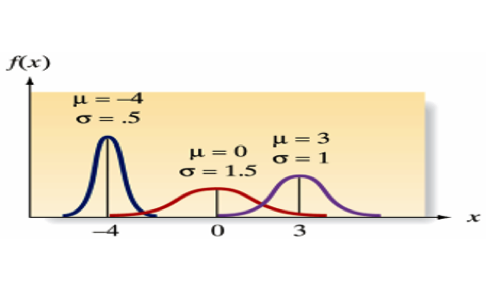
Discussion:
Using the function pnorm():
pnorm(x, mean, sd)pnorm(x, mean, sd, lower.tail = FALSE)Example: Suppose \(X\sim 𝑁(72, 15.2)\) (that is \(\mu=72, \sigma=15.2\)). To find
- P(X < 84)
pnorm(84, mean =72, sd = 15.2)
pnorm(84, mean =72, sd = 15.2, lower.tail = FALSE)
Using the function pnorm():
pnorm(b, mean, sd) - pnorm(a, mean, sd)Example: Suppose \(X\sim 𝑁(72, 15.2)\) (that is \(\mu=72, \sigma=15.2\)). To find
pnorm(90, mean =72, sd = 15.2)- pnorm(70, mean =72, sd = 15.2)
OR
1 - (pnorm(70, mean =72, sd = 15.2) + pnorm(90, mean =72, sd = 15.2, lower.tail = FALSE))
- The standard normal distribution is \(𝑁(0,1)\). That is, \(\mu=0\) and \(\sigma=1\).
- The letter \(Z\) is used for the random variable that has standard normal distribution.
- The cumulative probability under the standard normal distribution is given by a table (see Textbook, Appendix C, page 410-411) – See an Example on next slide.
- The function pnorm() can also be used to compute probabilities under the standard normal distribution by setting the mean = 0 and sd = 1 or simply not specifying them.
-Example: Suppose \(Z\sim N(0,1)\). Find \(P(Z<1)\).
pnorm(1, mean =0, sd = 1)
OR
pnorm(1)
-Example: Suppose \(Z\sim N(0,1)\). Find \(P(Z<1)\) using the Z-Table.
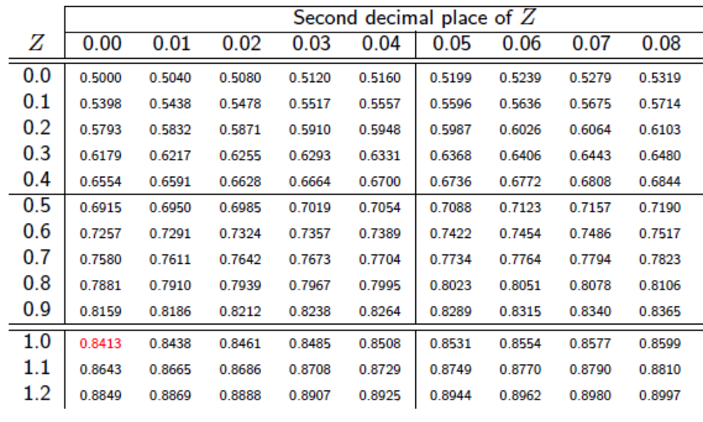
For \(𝑁(0,1)\), what percent of the variable is in each region? Sketch the graph for each region and use the code chunk below to find the probabilities using pnorm().
1) \(𝑍<1.25\)
2) \(𝑍>−0.25\)
3) \(−0.4 <𝑍<1.5\)
4) \(|𝑍|<1.25\)
5) \(|𝑍|> 2.23\)
For 𝑁(0,1) , what percent of the variable is in each region? Sketch the graph for each region.
1) 𝑍<1.25
2) 𝑍>−0.25
3) −0.4 <𝑍<1.5
4) |𝑍|<1.25
5) |𝑍|> 2.23
Answers:
0.8944 (89.44%)
0.5987
0.5886
0.7888
0.0258
This app allows us to change: 1) mean; 2) standard deviation; 3) area (lower tail, upper tail, two tails, middle)
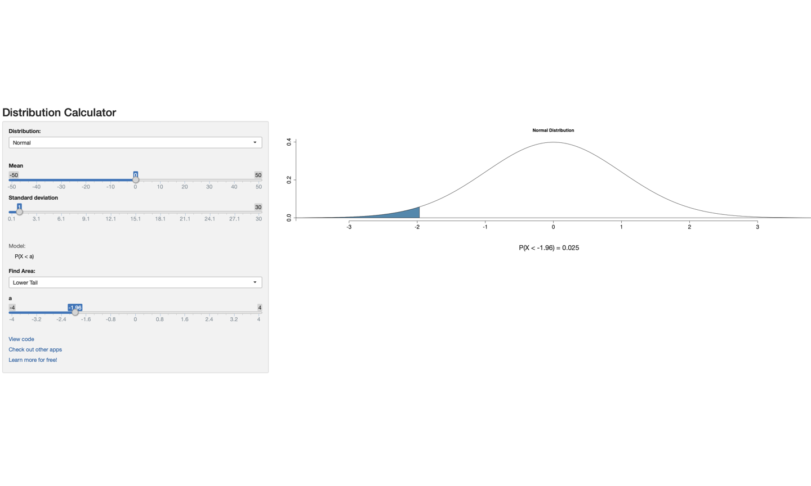
- For an observation \(𝑥\) of \(𝑋\), the z-score (standardized scores) is \(𝑧=\frac{𝑥−\mu}{\sigma}\) where \(\mu\) is the mean, \(\sigma\) is the standard deviation
If \(𝑋\) has a normal distribution \(𝑁(\mu, \sigma)\), then \(𝑍=\frac{𝑋−\mu}{\sigma}\) has the standard normal distribution \(N(0,1)\).
The z-score of an observation is the number of standard deviations it falls above (\(𝑧>0\)) or below (\(𝑧<0\)) the mean: \[𝑥=\mu+𝑧\sigma \]
The z score of \(\mu\) is 0 (for any distribution)
Observations that are more than 2 SD away from the mean (\(|𝑍| > 2\)) are usually considered unusual.
Using R, we can find (see earlier example)
\(𝑃(𝑍<1.43)=0.9236\),
\(𝑃(𝑍>1.43)=0.0764\).
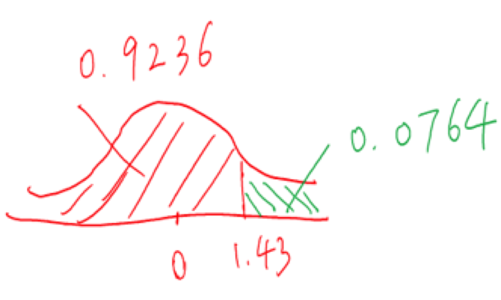
For a general normal random variable \(X\sim N(\mu, \sigma)\), we have
\[𝑃(𝑋<\mu+1.43\sigma)=0.9236\]
\[𝑃(𝑋>\mu+1.43\sigma)=0.0764\]
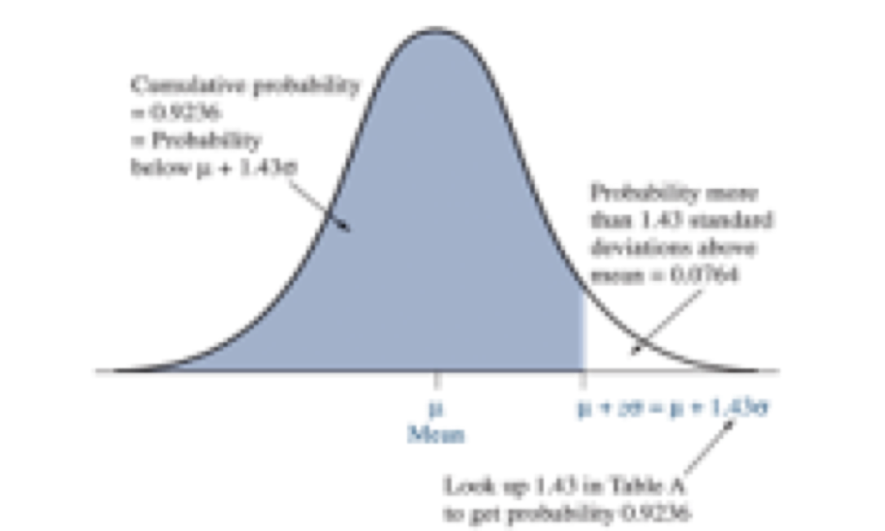
Based on data from smartphones available from major carriers in the U.S, in 2014, the distribution of the standby time approximately follows a normal distribution with a mean of \(\mu=330\) minutes and a standard deviation of \(\sigma=80\) minutes.
Solution. Use the pnorm() command in the below R code chunk to confirm the following probabilities.
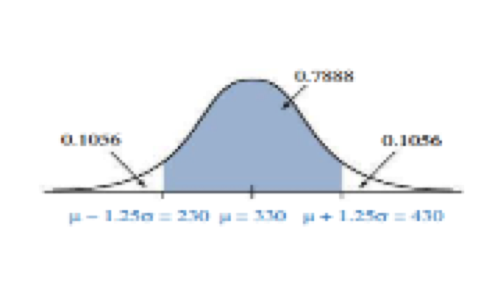
As \(\mu=330\), \(\sigma=80\) , we can compute \(\mu−1.25\sigma\), \(\mu+1.25\sigma\):
\(\mu−1.25\sigma=330−1.25×80=230\),
\(\mu +1.25 \sigma=330+1.25×80=430\).
At Heinz ketchup factory the amounts which go into bottles of ketchup are supposed to be normally distributed with mean 36 oz. and standard deviation 0.11 oz. Once every 30 minutes a bottle is selected from the production line, and is below 35.8 oz. or above 36.2 oz., then the bottle fails the quality control inspection.
pnorm(35.8, mean= 36, sd= 0.11) #part (1) pnorm(36.2, mean= 36, sd= 0.11) - pnorm(35.8, mean= 36, sd= 0.11) #part (2)
Solution. Let \(𝑋\) represent the amount of ketchup in a bottle, then \(𝑋 \sim 𝑁(36, 0.11)\)
pnorm() in R (see code chunk above), we get\[𝑃(𝑋< 35.8) = 0.0344\]
pnorm() in R (see code chunk above), we get\[𝑃(35.8 < 𝑋< 36.2) = 0.9310\]
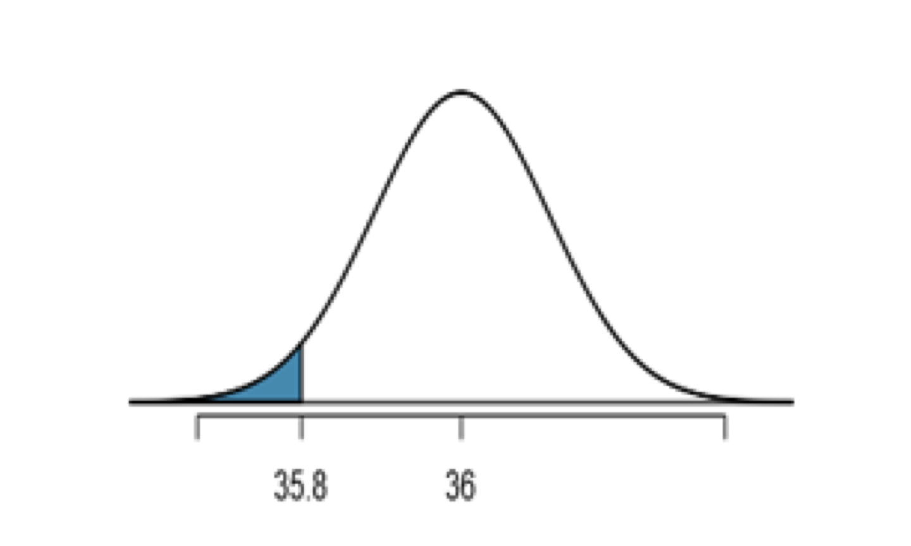
We cannot just compare the two raw scores. We instead compare how many standard deviations beyond the mean each score is by using the Z-scores.
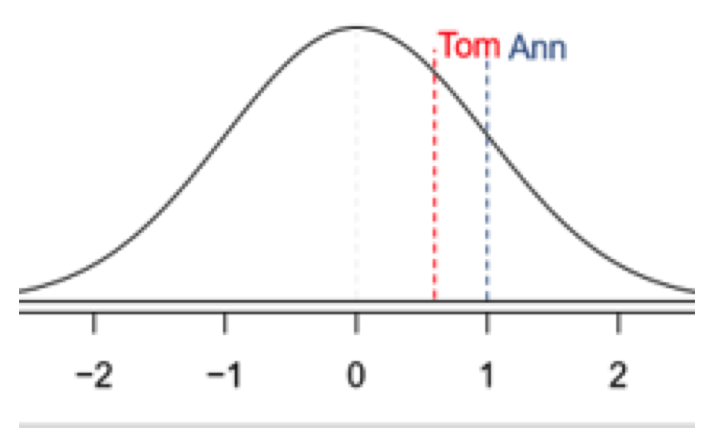
A \(𝒑^{th}\) percentile is a score below which p% of observations falls below or at the value of the score.
Graphically, percentile is the score(observation) of random variable that that area (probability)under the probability distribution curve to the left of that observation is 𝑝/100. It is also called the value of the inverse cumulative density function.
For any normal distribution, the mean 𝜇 is the 50th percentile.
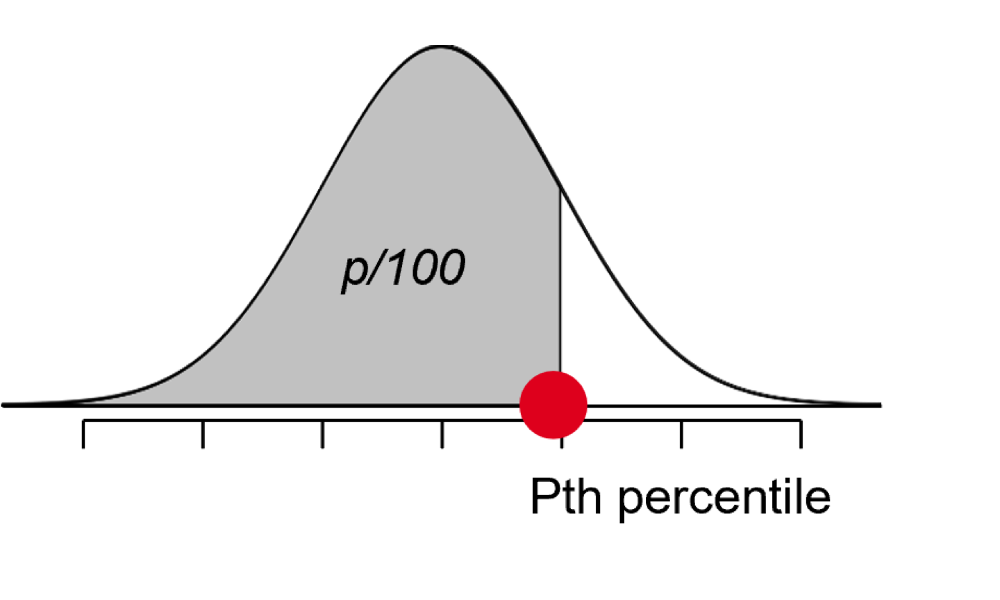
For \(N(0,1)\), −1.96 is the 2.5th percentile: the probability that a normal random variable falls at least 1.96 standard deviations below (because of the negative sign) the mean is 0.025, or \(𝑃(𝑍<−1.96)=0.025\)
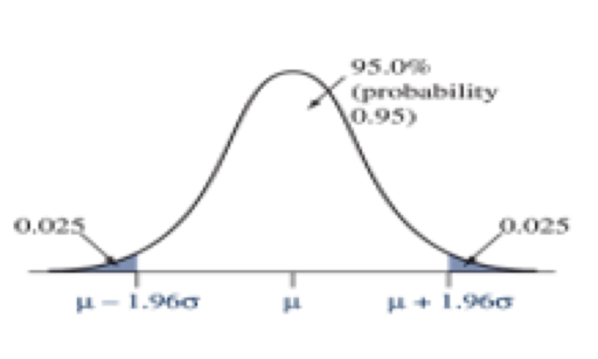
The function qnorm() returns the value of the \(p(\times 100)th\) percentile under the the normal distribution curve (i.e., the value that has \(p\) probability to its left under the normal curve).
Use syntax: qnorm(p, mean, sd) in general, or simply qnorm(p) for standard Normal Distribution
Example.
qnorm(0.25) qnorm(0.5) qnorm(0.75)
qnorm(0.95, 10, 2)
Body temperatures of healthy humans are distributed nearly normally with mean \({98.2^\circ}\)F and standard deviation \({0.73^\circ}\)F. What is the cutoff for the lowest 3% of human body temperatures?
x = qnorm(0.03, 98.2, 0.73) x
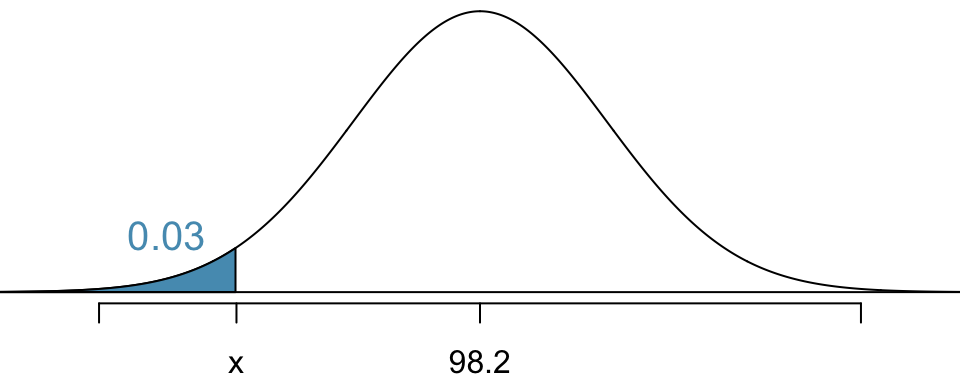
Body temperatures of healthy humans are distributed nearly normally with mean \({98.2^\circ}\)F and standard deviation \({0.73^\circ}\)F. What is the cutoff for the lowest 3% of human body temperatures?
z = qnorm(0.03) z
\(P(X<x) = 0.03 \rightarrow P(Z<\color{red}{-1.88})=0.03\) \(Z = \frac{obs-mean}{SD} \rightarrow \frac{x-98.2}{0.73}=-1.88\) \(x = (-1.88 \times 0.73)+98.2 = {96.8} F\)
Body temperature of healthy humans are distributed nearly normally with mean \({98.2^\circ}\)F and standard deviation \({0.73^\circ}\)F. What is the cutoff for the highest 10% of human body temperatures?
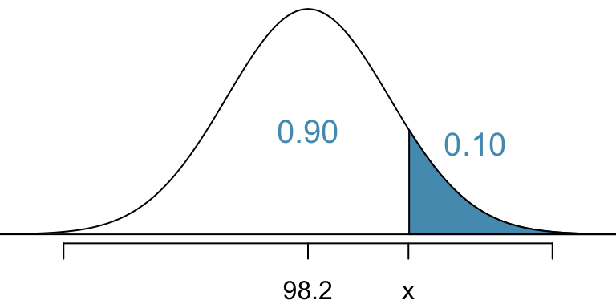
Body temperature of healthy humans are distributed nearly normally with mean \({98.2^\circ}\)F and standard deviation \({0.73^\circ}\)F. What is the cutoff for the highest 10% of human body temperatures?
qnorm(0.90, 98.2, 0.73)
qnorm(0.10, 98.2, 0.73, lower.tail = FALSE)
- For nearly normally distributed data,
about 68% falls within 1 SD of the mean,
about 95% falls within 2 SD of the mean,
about 99.7% falls within 3 SD of the mean.
It is possible for observations to fall 4, 5, or more standard deviations away from the mean, but these occurrences are very rare if the data are nearly normal.
For normal distributions, beyond 2 SD, the observations are said to be unusual.
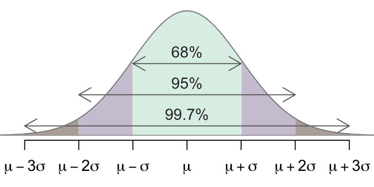 Note: Empirical rule is not exactly normal.
The following graph shows the normal distributions for women’s height \(𝑁 (65,3.5)\) and men’s height \(𝑁(70, 4)\) in North America.
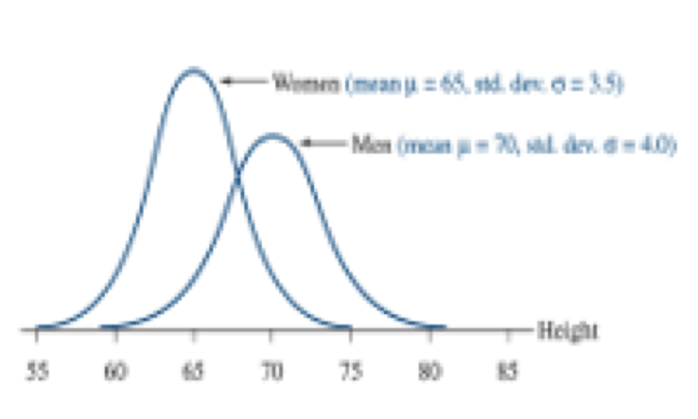
Question: For men’s height, within what interval, do the 68% of men’s height fell? 95%? 99.7%?
That is, 68% of men has height between 66 inches and 74 inches.
\[(𝜇−2𝜎,𝜇+2𝜎)=(70−2×4, 70+2×4)=(62, 78)\]
That is，95% of men has height between 62 inches and 78 inches.
\[(𝜇−3𝜎,𝜇+3𝜎)=(70−3×4, 70+3×4)=(58, 82)\]
That is， 99.7% of men has height between 58 inches and 82 inches.
Exercise. Do the same for women’s height data.
SAT scores are distributed nearly normally with mean 1500 and standard deviation 300.
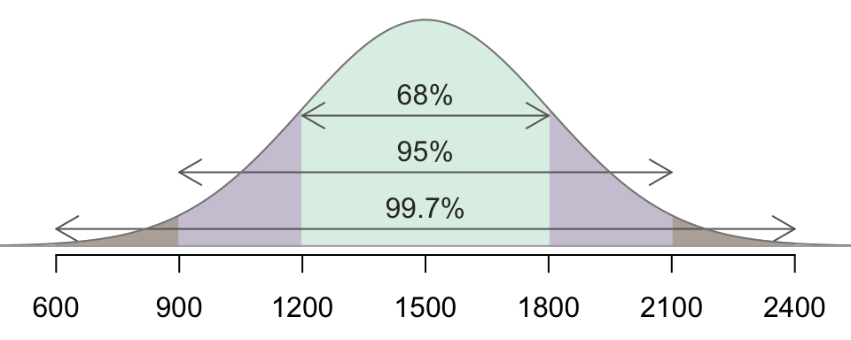